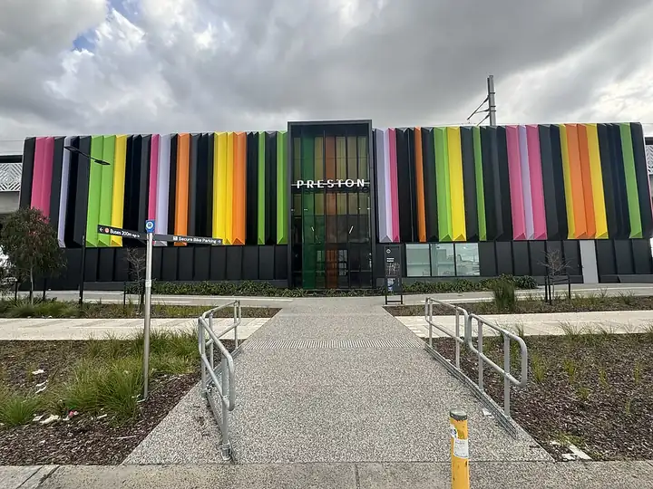

Preston Market
Preston Market is a shopping centre in Preston, in the Darebin City Council area, handy for a rainy day or a quick stop. Preston Railway Station (train) is a 2-minute walk away and the nearest public toilet is about 52 m away. Opening hours: opening_hours: We-Th,Sa-Su 08:00-15:00; Fr 08:00-18:00; Mo-Tu closed.

.jpg){kind=link}
Quick facts
- Opening hours
- Wed–Thu,Sat–Sun 8am–3pm, Fri 8am–6pm, Mon–Tue closed
- Toilets
- 52 m away
- Wheelchair access
- Yes
- Public transport
- Preston Railway Station, train (routes Mernda Line), 2 min walk
This page has basic info from the map: name, location and type. We have not checked the details yet. Know this place? Tell us.
Details
- Opening hours
- opening_hours: We-Th,Sa-Su 08:00-15:00; Fr 08:00-18:00; Mo-Tu closed (OpenStreetMap)
- Wheelchair access
- yes (OpenStreetMap)
Questions parents ask
- What are the opening hours of Preston Market?
- Preston Market is open Wed–Thu,Sat–Sun 8am–3pm, Fri 8am–6pm, Mon–Tue closed. Hours can change on public holidays, so check before you go.
- Where is Preston Market?
- Preston Market is in Preston, Victoria.
- Are there toilets at Preston Market?
- The nearest public toilet is about 52 m away.
- How do I get to Preston Market by public transport?
- The closest stop is Preston Railway Station (routes Mernda Line), a 2-minute walk.
- Is Preston Market wheelchair accessible?
- Yes, it is wheelchair accessible.
Nearby places
- Olive Branch
Cafe or restaurant · PrestonToilet nearbyBus 2 min walk
- Peter's Pizza and Takeaway
Cafe or restaurant · PrestonToilet nearbyTrain 2 min walk
- Preston City Oval
Park · PrestonToilet nearbyFreeTrain 4 min walk
- Playground on Gower Street
Playground · PrestonToilet nearbyFreeBus 3 min walk
- Playground on Herbert Street
Playground · PrestonFreeBus 3 min walk
- Asling Reserve
Park · PrestonFreeBus 2 min walk
- C
Library · PrestonFreeBus 1 min walk
- Preston South Shopping Centre
Shopping centre · PrestonTram 4 min walk